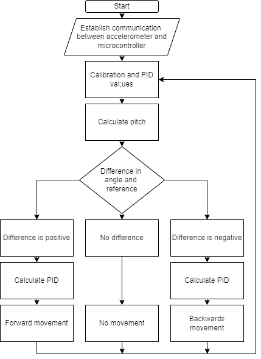
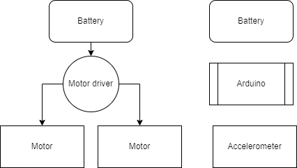

Controls & Embedded Systems
Self-Balancing Robot
A two-wheeled inverted pendulum on an Arduino Uno. The MPU-6050's onboard DMP handles sensor fusion, feeding stable pitch angles into a PID controller that drives two geared DC motors through an L298N at 100Hz — keeping the robot upright in real time.
Hardware
| Component | Part | Details |
|---|---|---|
| Microcontroller | Arduino Uno | ATmega328P, 5V |
| IMU | MPU-6050 | 6-axis accel/gyro, I2C, onboard DMP |
| Motor Driver | L298N | Dual H-bridge, 5V logic, up to 12V motor supply |
| Motors (×2) | JGA25-370 | Geared DC, 1:34 ratio, 126 RPM @ 12V, 73mm wheel |
| Motor Supply | 9V | Applied to motors via L298N |
PID Tuning — Final Values
kP
30
Proportional — main balance force, responds to current tilt
kI
90
Integral — corrects steady-state lean and slow drift
kD
0.5
Derivative — damps oscillation and motor judder
Sample rate: 10ms (100Hz) · Trim angle: 2.85° · Output limits: −255 to +255 PWM
Diagrams




Sketch Versions
| Sketch | Description |
|---|---|
RobotTest.ino | IMU validation — raw MPU-9250 output, pitch/roll calculation, verifies wiring before PID integration |
TWRbalance-1.ino | First full balance attempt. L293D pinout, kP=150/kI=400/kD=5, trimAngle=−4.3° |
TWRbalanceOURS.ino | Adapted to L298N pinout, gains reduced significantly, trimAngle=3.125° |
TWRbalanceOURS_v2.ino | Final version — adds timed moveForward/standStill state machine, kP=30/kD=0.5 |